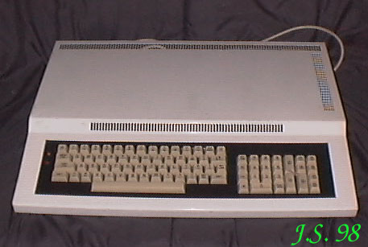

IMPOL IIIMPOL II Sp. z o.o. to firma tzw. polonijna. Pierwsze próby ściągnięcia kapitału do Polski na początku lat 80-tych ubiegłego wieku (fajnie to brzmi, prawda? ;)) zaowocowały pojawieniem się różnych firm bazujących na taniej sile roboczej. Firma IMPOL II produkowała na polski rynek komputery, których wciąż było mało w czasach budzącej się "komputerowej rewolucji".IMZ80 Procesor Z80RAM 16kB z możliwością rozszerzenia do 64kB.ROM 4kB.Procesor graficzny - brak.Rozdzielczość maksymalna ?Grafika niedostępna.Tekst 25 linii po 40 znaków.Porty: równoległy, szeregowy, magnetofon, FDD.Zewnętrzne peryferia: magnetofon, drukarka, podwójna stacja dysków 5,25", programator EPROM 2716 i 2732.Dźwięk: brak |